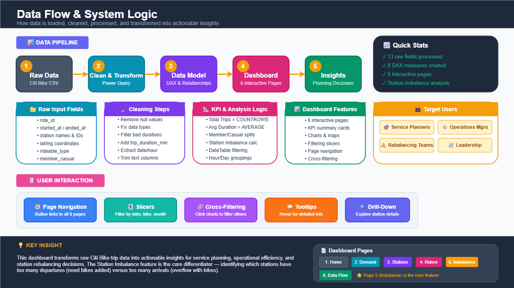
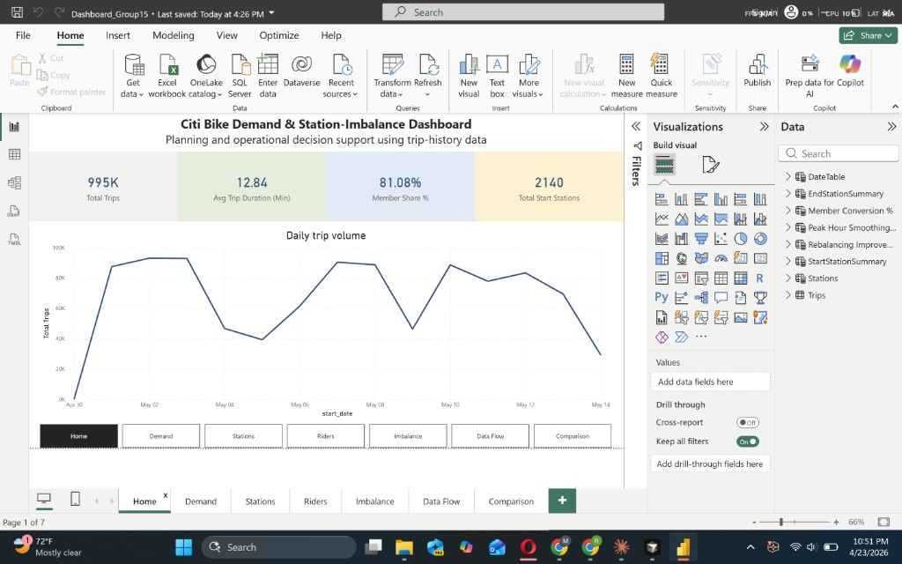
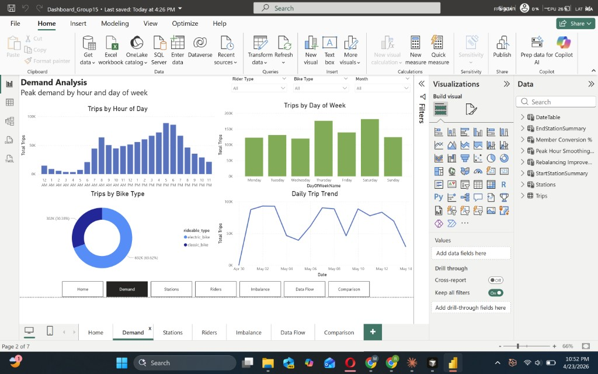
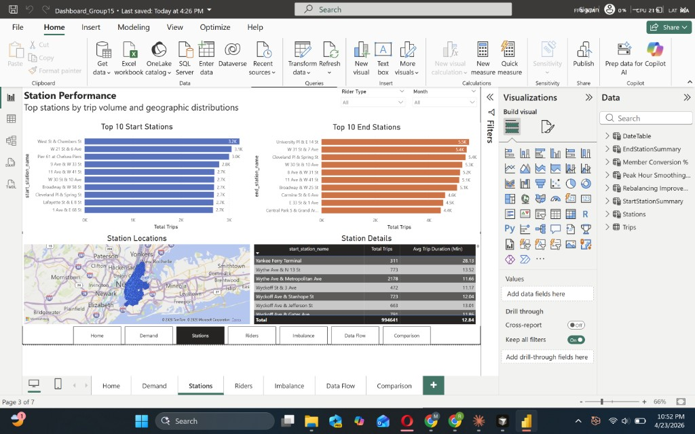
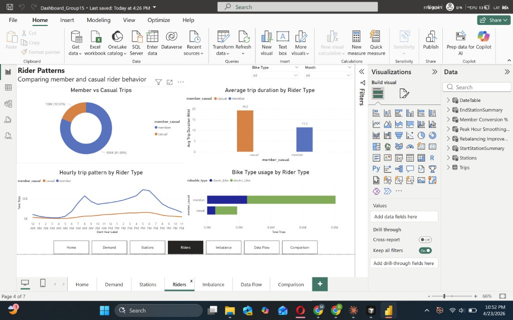
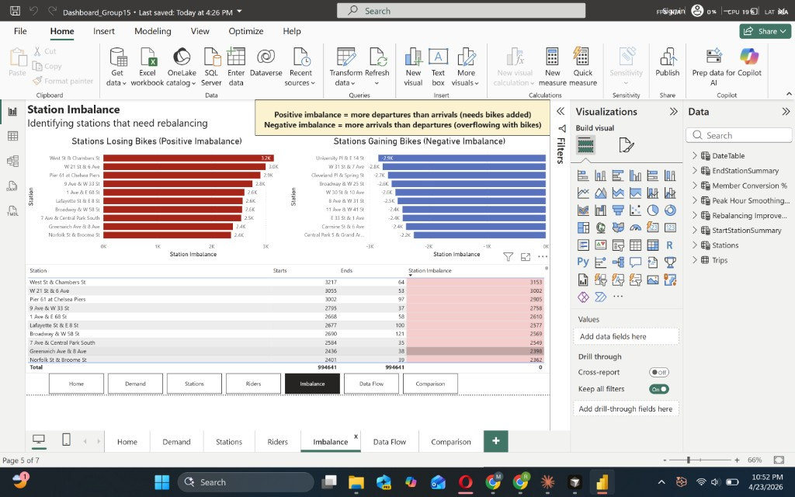
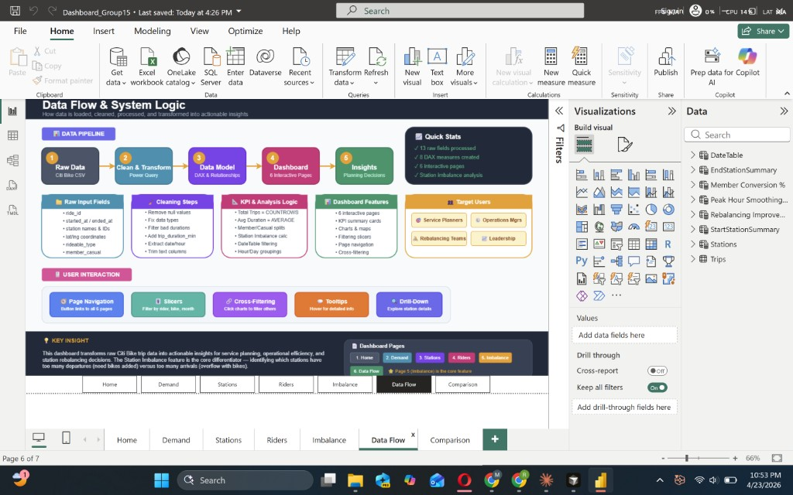
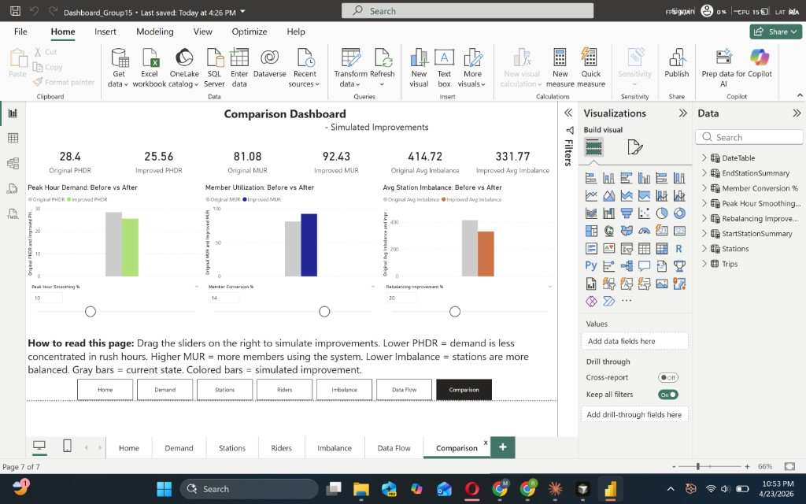

A data-driven system that turns 1 million May 2025 trips into actionable insights for service planners, operations managers, and rebalancing teams — and quantifies what changes if we act on them.
New York City's Citi Bike system serves over one million rides every month, yet riders still encounter empty docks during morning commutes and overflowing stations by evening. Our Master's Research Project builds a Decision Support System (DSS) that analyzes the full May 2025 trip-history dataset (994,641 cleaned trips across 2,140 stations) and surfaces three operational KPIs: Peak Hour Demand Ratio (PHDR), Member Utilization Rate (MUR), and Station Imbalance Index (SII).
The DSS is delivered in two coordinated layers. A Power BI dashboard gives analysts and planners deep exploratory access — 7 linked pages covering demand patterns, station performance, rider behaviour, and imbalance hotspots. A complementary web application (React + Vite, deployed on Vercel) mirrors those views for stakeholders without Power BI Desktop, and adds an interactive Comparison simulator that lets leaders drag sliders for peak-hour smoothing, member conversion, and rebalancing intensity and see the projected KPI impact in real time.
Findings show demand is sharply concentrated in 7–9 AM and 5–7 PM windows, electric bikes dominate at ~70% of all trips, and station imbalance is structural rather than random — the top 15 "losing" stations bleed over 2,000 bikes each per month while the top "gaining" stations accumulate a comparable surplus. Our simulator indicates that a realistic operational envelope (10% peak smoothing, 14% member conversion, 20% rebalancing improvement) would move the MUR to 92% and cut average station imbalance by ~20% — measurable wins from low-capex operational changes.
Bike-share networks fail quietly. There is no outage page, no error dialog — just a rider walking up to an empty dock at 8:07 AM, giving up, and taking the subway. That is the problem our project exists to fix.
28.4% of daily rides occur inside the 7–9 AM and 5–7 PM windows. Commuters compete for the same bikes at the same stations, creating empty-dock failures.
The top 15 departure-heavy stations lose 2,000–3,200 bikes each per month. Their mirrors — destination-heavy stations in Midtown and the Village — overflow by comparable amounts.
Manual truck rebalancing is labor-intensive and reactive. Without data-driven targeting, teams spend cycles on low-impact stations while high-stress ones stay under-served.
Every view in the dashboard is built for a specific user with a specific decision.
Use the Demand page to plan bike allocation for peak windows and weekday surges.
Use the Imbalance page to route rebalancing trucks to the highest-pressure stations first.
Use KPI cards and the Comparison simulator for system health and strategic direction.
Use station-level detail to prioritize which stations need immediate attention each shift.
Riders are the ultimate beneficiary. Every percentage point of improved balance translates directly into fewer empty-dock failures at the moment someone needs a bike the most.
Before touching a single chart, we grounded our project in published research on bike-share rebalancing, demand forecasting, and NYC-specific mobility patterns.
Prior studies on bike-share systems (NYC, Paris, London, DC) show that ~5–10% of station-pairs drive the majority of imbalance. Our findings replicate this pattern strongly — the top 15 stations account for disproportionate rebalancing cost.
Transit research consistently reports that urban commuter modes peak within a narrow 4-hour daily window. Our PHDR KPI operationalizes that insight with a threshold (28.4% today) we can move with policy.
Lyft publishes Citi Bike trip history as monthly CSVs under a public data license. This is the primary source underpinning the entire project — real data, not synthetic.
Every insight on this site traces back to a single dataset: Citi Bike's May 2025 trip-history CSV — 1,000,000 raw rows reduced to 994,641 after cleaning.
| Column | Type | Notes |
|---|---|---|
| ride_id | string | Unique per ride |
| rideable_type | enum | classic_bike / electric_bike |
| started_at / ended_at | datetime | UTC timestamps |
| start_station_name / id | string | Departure location |
| end_station_name / id | string | Arrival location |
| start_lat / lng · end_lat / lng | float | Geo coordinates |
| member_casual | enum | member / casual |
hour, day, trip_duration_min, date.Trips is the fact table; Stations and DateTable are shared dimensions; Start/EndStationSummary are aggregated views that feed the imbalance KPI; three Parameter tables drive the Comparison simulator.
erDiagram
Trips ||--o{ Stations : "start_station"
Trips ||--o{ Stations : "end_station"
Trips ||--o{ DateTable : "on date"
Stations ||--|{ StartStationSummary : "aggregates"
Stations ||--|{ EndStationSummary : "aggregates"
Trips {
string ride_id PK
string rideable_type
datetime started_at
datetime ended_at
string start_station_id FK
string end_station_id FK
float start_lat
float start_lng
float end_lat
float end_lng
enum member_casual
int trip_duration_min
int hour
string day
date date
}
Stations {
string station_id PK
string station_name
float lat
float lng
}
DateTable {
date date PK
string day
int week
string month
}
StartStationSummary {
string station_id FK
int starts
}
EndStationSummary {
string station_id FK
int ends
}
PeakHourSmoothingPct {
int value PK
}
MemberConversionPct {
int value PK
}
RebalancingImprovementPct {
int value PK
}

Six analytical pages in Power BI. Each answers a specific question a specific user actually asks.

The Home page establishes scale at a glance. Four KPI cards and a single daily-volume line chart answer the first question leadership always asks: "how big is this, and is it growing?"
A bi-modal daily distribution jumps out immediately: commuter spikes at 8 AM and 5–6 PM, with a softer midday shoulder. Saturday is the single largest day of the week, driven heavily by casual riders.


Side-by-side top-10 start and end station bars reveal a pattern: busiest start stations are residential edges (Brooklyn waterfront, UES), busiest end stations are commercial cores (Midtown, Union Square).
Members are predictable commuters (short, frequent, peak-hour). Casuals are leisure riders (longer trips, weekend-biased, tourist-pattern midday bump). Their hourly curves overlap only in the morning spike.


The red-vs-blue mirror is the single most actionable view in the entire dashboard. Every red bar on the left has a blue counterpart — a physical bike that needs to be picked up somewhere and dropped somewhere else.
A reference page for stakeholders who want to understand how the numbers are calculated. It covers input fields, cleaning steps, KPI logic, dashboard features, and target users in one scannable view.

28.4% of trips in 4 hours means smoothing policy (pricing, incentives) can move the needle significantly.
The same stations lose or gain bikes every day. Targeted rebalancing beats general effort.
Casual riders are 19% of trips but 40% of revenue potential — converting them lifts MUR and smooths peaks.
70% of riders choose electric. Fleet procurement and charging infrastructure should follow.
We did not build one dashboard — we built a system. Power BI for analysts who live in data. A React web app for everyone else who just needs to act on it.
flowchart LR
A[📄 Citi Bike CSV
May 2025 · 1M rows] --> B[🧹 Power Query
cleaning + type coercion]
B --> C[📊 Power BI data model
Trips · Stations · DateTable
DAX measures: PHDR · MUR · SII]
C --> D[📈 Power BI Report
7 pages · interactive slicers]
C --> E[📦 data.json
pre-aggregated export]
E --> F[⚛️ React + Vite app
Recharts visualizations]
F --> G[🌐 Vercel CDN
citi-bike-dashboard.vercel.app]
D --> H[☁️ Power BI Service
/ Google Drive download]
H -.->|reads| I[👤 Analyst
deep exploration]
G -.->|reads| J[👤 Stakeholder
quick insight + simulator]
G -.->|reads| K[👤 Leadership
strategic planning]
classDef data fill:#0f2d4a,stroke:#1e3a5f,color:#e2e8f0
classDef build fill:#0a1929,stroke:#00d4aa,color:#00d4aa
classDef out fill:#0a1929,stroke:#3b82f6,color:#3b82f6
classDef user fill:transparent,stroke:#94a3b8,color:#94a3b8,stroke-dasharray:5 5
class A,B,C,E data
class D,F build
class G,H out
class I,J,K user
Analyst-grade dashboard with linked slicers, cross-filtering, drill-through. The authoritative source for deep exploration.
Public-URL companion that removes the Power BI Desktop friction. Seven pages, identical insights, accessible on any device.
Three sliders — peak smoothing, member conversion, rebalancing improvement — that recompute PHDR, MUR, and SII in real time.
Every page is built for one user's one decision. Demand for planners, Imbalance for operations, Comparison for leadership.
Rider-type and bike-type slicers recompute every chart and KPI instantly — zero page reloads.
Works on phones and 27-inch monitors. Dark theme chosen for long-session analysts.
.pbix for deeper analysis.The Comparison dashboard answers the only question that matters after diagnosis: "if we act on this, by how much do the numbers move?"
At 10% peak-hour smoothing — shifting 2.8pp of trips out of the rush window through pricing and incentives.
At 14% casual-to-member conversion — realistic with a campaign targeting midday casuals.
At 20% rebalancing improvement — a 20% reduction in daily station variance from smarter truck routing.

Each slider corresponds to a real operational lever. Peak-hour smoothing maps to dynamic pricing or late-start employer incentives. Member conversion maps to a marketing campaign. Rebalancing improvement maps to truck-routing optimization. None require new capital expenditure — they are all operational tweaks. The combined simulated outcome (MUR → 92%, SII ↓ 20%, PHDR ↓ to 25.5%) is what a single quarter of focused work could produce, not a long-term aspiration.
Project charter, responsibility matrix, and phase roadmap — the scaffolding that kept a five-person team aligned across a semester.
Problem framing, stakeholder interviews, data source selection (Citi Bike public trip-history).
Data model + ER diagram, dashboard wireframes, KPI definitions (PHDR · MUR · SII).
Power Query cleaning → Power BI 7-page report → React + Vite app → Comparison simulator.
Cross-checked PBI ↔ React numbers, deployed to Vercel, portfolio site scaffolded, GitHub Pages enabled.
5-minute live presentation (Apr 28 / May 5), final written report (May 26).
| Workstream | Nithin | Aditya | Rushi | Sandeep | Bharat |
|---|---|---|---|---|---|
| Data cleaning & modelling | C | R | C | I | I |
| Power BI report | R | C | A | I | C |
| KPI definitions (DAX) | C | R | A | C | I |
| React web app | I | C | R | A | C |
| Comparison simulator | I | I | R | C | C |
| Deployment & DevOps | I | I | R | I | I |
| Portfolio site & presentation | R | C | C | C | A |
| Written report | C | C | I | R | A |
Full Project Charter and detailed Responsibility Matrix available in the appendix of the written report (3.1).
Any system that allocates a scarce urban resource has social weight. We identified four concerns worth calling out explicitly.
Citi Bike publishes trip data aggregated to the ride level with no rider identifier — we do not work with PII. However, station + timestamp combinations could theoretically be correlated with an individual's known locations. We therefore never present rider-level views and always aggregate to station or hour.
Optimizing purely for "most trips" reinforces existing service density in Manhattan and wealthy Brooklyn zip codes, starving outer boroughs. Any deployment of this DSS should pair trip-volume KPIs with an equity KPI — e.g. minimum acceptable service level by neighborhood.
Every rebalancing truck mile partially offsets the carbon benefit of the shared bike. Our rebalancing improvement slider has an implicit environmental upside: fewer trucks, fewer miles, fewer emissions per trip served.
This is a decision-support tool — humans remain in the loop. We explicitly did not automate dispatch or pricing. Every KPI shown, every simulator setting, is a recommendation to a human operator, not an autonomous action.
Five people, one semester, two technology stacks. Honest retrospective below.
Treating the Power BI report and the React web app as two parallel deliverables (instead of one blocking the other) let two sub-teams work in parallel. The data.json snapshot exported from PBI acted as the contract between them.
Naming PHDR, MUR, and SII in week 2 meant every chart we built after had a clear reason to exist. Without those KPIs as anchors, the dashboard would have become a collection of pretty charts with no narrative.
We budgeted 1 week for Power Query work and spent 2.5 weeks. Null coordinates, duplicate station IDs, and 24-hour+ "stuck" trips each needed their own filter. Lesson: triple cleaning estimates for real-world transit data.
Early in development, the two stacks showed slightly different KPIs (994,641 vs 1,000,000 trips) because of different cleaning snapshots. We fixed this by re-aligning data.json to the PBI totals — but we should have defined a single canonical source from day one.
~20% of daily variance is weather-driven. A follow-on version should join NOAA daily weather and NYC public holidays so the Comparison simulator can adjust baselines for conditions, not just operational levers.
The React app's station data includes lat/long, but the map visualization shipped only in Power BI. A Leaflet or Mapbox view in the app is the highest-leverage feature still on the backlog.
"The hardest part of data-driven decision support isn't the data or the dashboards — it's picking the right three KPIs and having the discipline to keep every visual tied back to them."
— Group 15 retrospective, April 2026
Saint Louis University · Master's Research Project · Spring 2026
Power BI · Presentation Lead
Data Modelling · DAX
React App · Deployment
Written Report · QA
Project Management · Accountability
Roles are indicative — full contribution detail in the RACI matrix above.